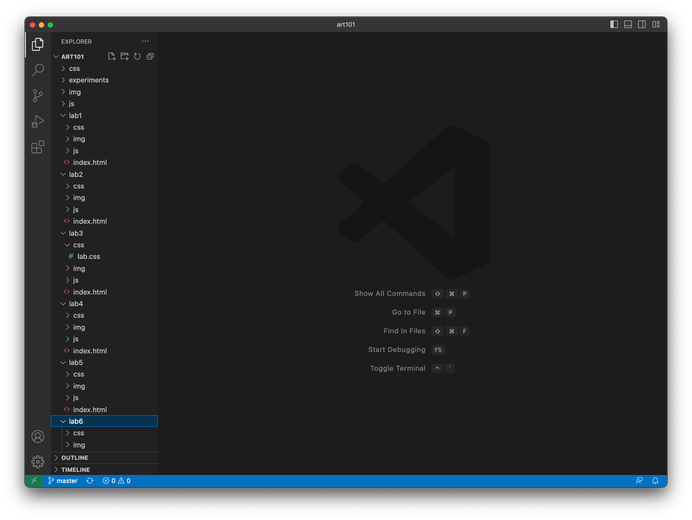
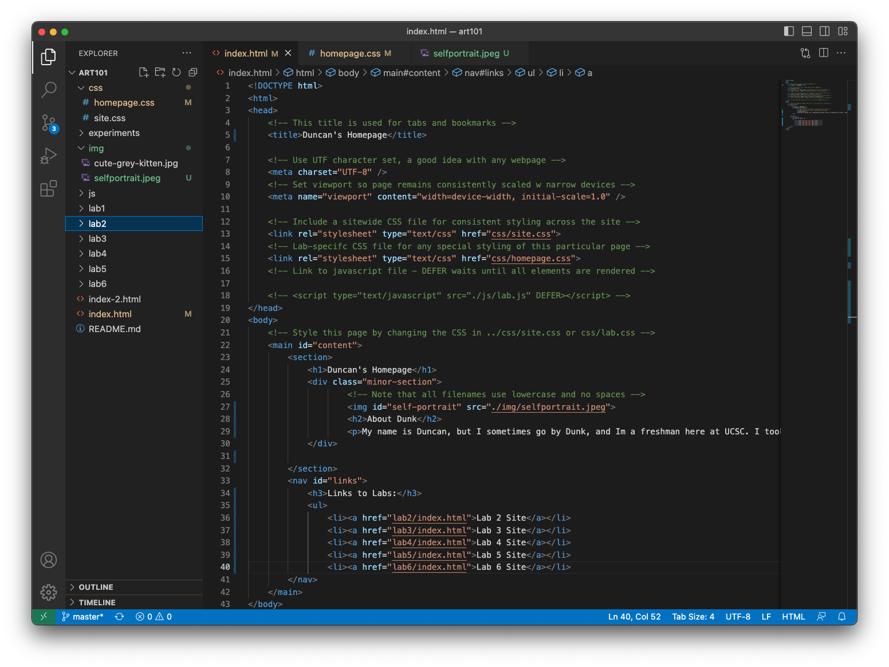
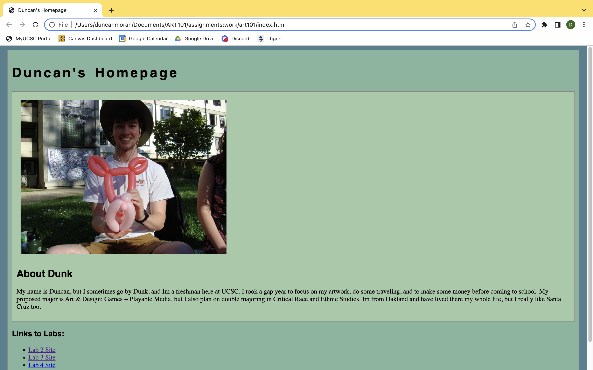
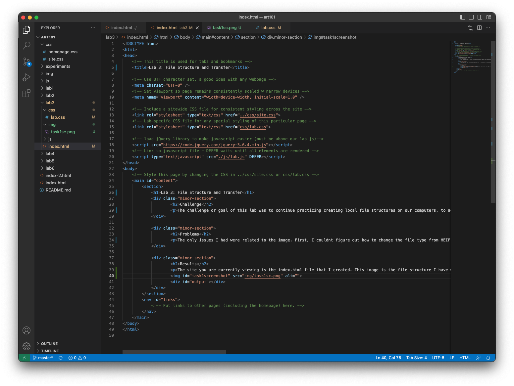
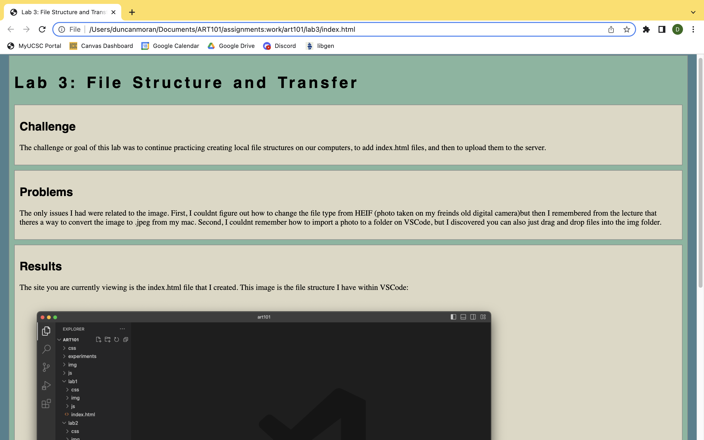

Lab 3: File Structure and File Transfer
Challenge
The challenge or goal of this lab was to continue practicing creating local file structures on our computers, to add index.html files, and then to upload them to the server.
Problems
The only issues I had were related to the image. First, I couldnt figure out how to change the file type from HEIF (photo taken on my freinds old digital camera)but then I remembered from the lecture that theres a way to convert the image to .jpeg from my mac. Second, I couldnt remember how to import a photo to a folder on VSCode, but I discovered you can also just drag and drop files into the img folder.
Results
The site you are currently viewing is the index.html file that I created. This image is the file structure I have within VSCode:
Screenshot of html code for art101/index.html, aka my homepage:
Screenshot of art101/index.html, my homepage, in my browser as a local file:
Screenshot of the lab3/index.html which makes up this site. Note: Screenshot taken before these images and captions were coded into the lab3/index.html:
Screenshot of this site that you can view by scrolling up, included because instructions said to "add all of your screenshots...and caption them."
